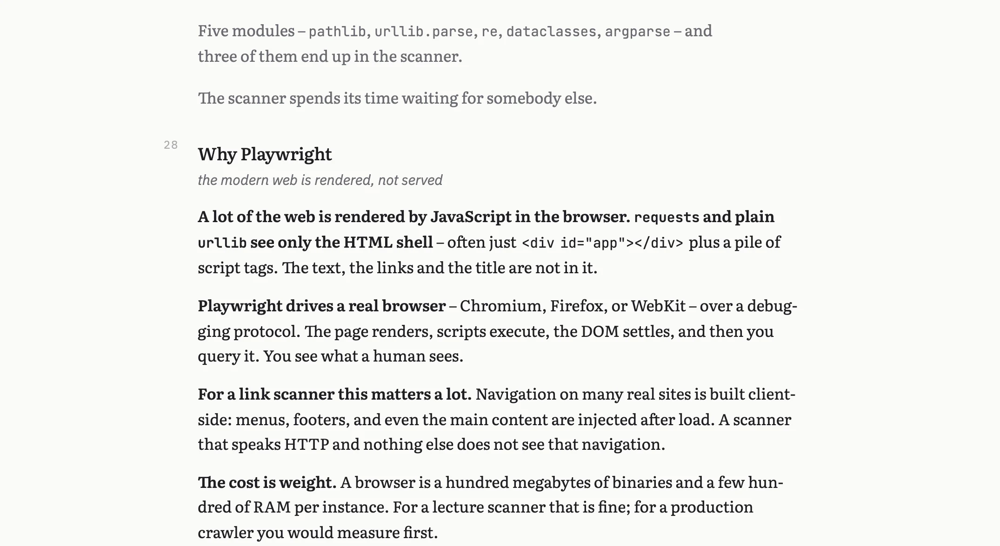
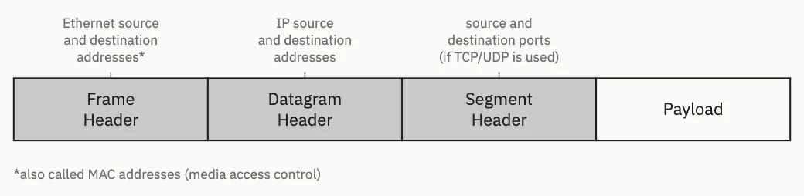

psi-slides · presentation software for lecturers · Diese Seite auf Deutsch
Write the lecture once.
One Markdown file goes in. Four HTML files come out: the projection for the room, a cockpit for your own screen, and two handouts. Built from the same file, they cannot drift apart.


One slide of a real lecture, twice. On the left, what the room sees. On the right, the same four paragraphs in full. One keypress separates them.
The switch in the right-hand bar swaps that view for the printed handout – a different file, built from the same source. Click any picture on this page to see it at full size.
The one-minute version
The argument on this page as a film: what a lecture is made of, what comes out of one file, and what the hour in front of the room looks like. Subtitled. Auch auf Deutsch.
A lecture holds three kinds of text
What goes on the slide has to read from the back row. The script – the sentences that actually explain the thing – belongs in a handout. And the notes to yourself belong on your own screen and nowhere else. Three texts, and the programs people present with have room for two. There are three ways that ends.
not ideal: everything on the slides
The script goes onto the slides, so the slides fill up. By the third bullet nobody in the back row is reading them any more, and there is still nothing to hand out afterwards.
This is death by PowerPoint, and it is what happens when a lecture has one place to put three texts.
also not ideal: slides and a script
Sparse slides, and the argument in a second document beside them. That works until you edit one of the two, which is usually the same afternoon.
From then on the handout describes a lecture you no longer give, and your notes to yourself still have nowhere to live.
our approach
Write each paragraph once, and mark the one sentence that carries it. The projection takes that sentence. The handout takes the whole paragraph. The lines you start with > note: stay on your own screen.
One file, three texts, and nothing to keep in step.
This is the whole source of that slide
Nine paragraphs of Markdown, no editor and no template. A chunk is one heading with the text under it, and a chunk becomes one slide. The lecture it comes from is real: an introduction to Python in 36 chunks.
Read the bold. Those are the phrases the projection keeps;
the prose around them is what the handout keeps. The
> note: at the foot is for nobody but you.
Two of the four paragraphs are shortened to fit this page. In the projection the author’s two columns fold into one, because four abridged paragraphs do not balance; with the shortening off, and in the handout, the columns stay.
## free: Why Playwright | the modern web is rendered, not served {.wide #why-playwright}
::: cols 2
**A lot of the web is rendered by JavaScript in the browser.**
**`requests` and plain `urllib` see only the HTML shell** – often just
`<div id="app"></div>` plus a pile of script tags. Useful text, links, and
titles never arrive.
**Playwright drives a real browser** – Chromium, Firefox, or WebKit – over a
debugging protocol. The page renders, scripts execute, the DOM settles, and
then you query it. You see what a human sees.
**For a link scanner this matters a lot.** …
**The cost is weight.** …
:::
::: footnote
`requests` is still the right tool for an API that answers in JSON. The
browser is for pages meant to be looked at.
:::
> note: Show the difference live if the room is awake: open a JS-heavy site,
> curl it, and let them find the missing text themselves.The hour in front of the room
The projection goes on the wall. This goes on your laptop. Your note for the current slide sits under a mirror of it, at a size you set, and the strip along the bottom shows what is coming.
The two windows keep each other in step in the browser, with no server between them. S from the projection opens it.


A question from the room is usually about something forty slides back. Two ways to get there without losing your place, both of them over the projection itself.
What the students take away
The same source set as a document: hyphenated, at a line length made for reading, with the margin note as an aside.
There are two of these, and the switch in the title bar shows
both. print.html carries the script alone and is the one to hand
out. print-notes.html folds your speaker notes in under each
chunk and stays with you.

A slide is a frame, not only a column of text
A title slide, and the divider that opens each part of a lecture, are the two places where that matters most. One line of frontmatter picks the composition; the words stay where they are.
Three of the ten title slides, in the order they get louder.
classic is the default, and a lecture that never names one gets
it.

classic the type in the lower left third
panel pale type on a full field of the accent
hero a picture fills the slide, the type over a dark gradientThe other seven title slides, and the six part dividers
cover: names the title slide. cover-align: puts
the type high, in the middle or low, on the compositions that leave it any
freedom, and cover-ratio: says how much of the slide a picture
gets on the ones that divide it.

masthead the title at the top edge, credits under a rule at the foot
stack centred on both axes, for an opening that wants to be still
display the title large enough to fill the slide
quote the talk opens on a claim; the title reads as the attribution
split the type on the left, a picture running off the right edge
beside the chunk’s own content beside the title, so a drawing can be the cover
above the same content on top, the title centred belowsection: draws the divider a new part of the lecture opens
with. All six are quieter than any title slide.

plain the heading alone. The default
tinted the accent at 12%. From the back of a room the colour arrives before any word
rule the quietest, and one that survives a black-and-white print
card the heading on a tinted panel
number a large numeral above the heading, counting the parts
outline the running agenda: which part, out of how many, and how far inThese are a preview. They are not in the 1.0.0 release,
so a lecture naming a cover: or a section: needs
the repository rather than the download –
Getting started has both.
Everything one lecture can carry at once, including cards, backdrops and a photograph that opens as you press Space, is in the decoration lecture.
A figure is text too
The lecture figures that go out of date are the ones that live in a drawing program. psi-slides has a small language for them instead: a figure is a few lines in the same file as the slide it sits on.
Nothing in this one is placed at a point on a canvas. Each box is placed against another box, so moving one moves everything attached to it – and the figure can be built up in front of the room a step at a time.

Part of its source: the four boxes, one of the three notes, and the step that brings that note in.
Lengths are in grid cells, not pixels –
the opening line sets the cell, so a figure keeps its proportions when the
cell changes. And -- fh.cx,fh.top is a leader
line: it points at a spot on another box and stays attached when
that box moves.
::: draw 150x54
default box {.tone-3 .sharp} w 0.88 h 0.85
box fh "Frame\nHeader" at 0,0
box dh "Datagram\nHeader" right of fh gap 0 same as fh
box sh "Segment\nHeader" right of dh gap 0 same as fh
box pl "Payload" right of sh gap 0 same as fh {.paper}
text lmac "Ethernet source\nand destination\naddresses*" above fh gap 0.5 -- fh.cx,fh.top {.muted @l1}
step ethernet
show @l1
emph fhThis one is a preview too. To try it you need the repository itself – a clone, or Download ZIP from its Code menu. The Source code (zip) attached to a release is the tagged release and does not contain it, and the format is still open to change.
Figures you write is the case for the language: what a lecture figure has to do that a drawing program and an auto-layout language each do badly. The manual builds one a line at a time, lists every statement, and shows the graphical editor that lets you drag a box on the live slide and have the source rewritten.
Open the lectures yourself
These are the tool, not a video of it. Arrow keys move, C switches between the shortened text and the full text, O opens the overview board, / searches, and ? lists every key.
Start here: python-intro
36 slides · about 25 minutes
The lecture every picture on this page comes from: an introduction to Python for people who have written some code before. Open the projection and press C to see the same slide shorten and unshorten.
Then: the tutorial
92 slides · a reference to dip into
Every construct the format has, explained by a lecture that is itself built out of them. Its source is what you write your own against.
The other three lectures
python-intro and the tutorial are the two above; these are the rest. All three are built from the repository rather than the release, and decoration publishes only two of its four views.
Short example 6 slides · German
One section of a first-year networking lecture. Eighty-odd lines of Markdown, short enough to read end to end beside what it produces.
Figures 40 slides
Every construction the figure language has, drawn rather than described, with figures from a real course among them.
Decoration 39 slides
Everything that puts something other than a text column on a slide: title slides, dividers, cards, backdrops, a photograph that opens as you press Space.
All four files are self-contained: the styling, the scripts, the images,
the typeset maths and the typefaces sit inside the HTML file itself. Nothing
is fetched at run time, and they open as happily from a folder on disk
(file://) as from this server.
A cockpit opened from a link above shows the layout but is connected to nothing – press S inside a projection to open one that follows it.
Getting started
Two versions, and they differ in what they can do. Either one is a folder you unpack; nothing is installed system-wide.
The
latest release is 1.0.0. Its source format is fixed, so a lecture
that builds today keeps building the same way. The tutorial, python-intro and
short example are already built inside it, so opening
lectures/tutorial/audience.html runs the tour with nothing
installed at all.
curl -L https://github.com/UBA-PSI/psi-slides/releases/latest/download/psi-slides.tar.gz \
| tar xzThe
repository carries what 1.0.0 does not: figures written as
::: draw, the title slides and dividers, cards and rows, and the
graphical figure editor. If you came for any of those, take this one. What you
give up is the format promise – those parts may still need an edit when they
reach a release.
git clone https://github.com/UBA-PSI/psi-slidesWithout git, take Download ZIP from the repository’s green Code button.
Build the tutorial
This needs Node 20 or newer, which is what
runs build.js, and nothing else: no LaTeX, no Pandoc, no
server, nothing installed system-wide.
cd psi-slides
# once: the bundled typefaces and the handful of build dependencies
npm install
# build all four views next to source.md, then open the projection
node build.js lectures/tutorial/source.md
open lectures/tutorial/audience.html # macOS; xdg-open or your browser elsewhereIf you have never installed Node or used a terminal
The steps below take a Windows or macOS machine with nothing installed on it to a built copy of the tutorial.
Install Node
Open nodejs.org. The button offers the
LTS build – the long-term support one – in the right file for the machine
you are on; take that download. On macOS you get a .pkg:
double-click it, click through the installer, give your password when it
asks. On Windows you get an .msi: double-click, accept the
defaults, and leave the checkbox about tools for native modules alone.
Nothing in psi-slides needs them.
If you already use a package manager, brew install node on
macOS and winget install OpenJS.NodeJS.LTS on Windows do the
same thing.
Open a terminal
On macOS press Command-Space, type terminal, press Return.
On Windows open the Start menu and type terminal: take Windows
Terminal if it appears, PowerShell otherwise. You get a window with a cursor
in it. You type one line, press Return, and it answers.
node --versionThe answer is a version number. Anything from v20 upwards works, and a
fresh LTS download is well above it. If you instead get command not
found or is not recognized, close the window and open a
new one: a terminal that was already running when you installed Node has not
seen it yet.
Get the files
Take either version from the two above. The
release is the one to click if you are not sure; Download
ZIP from the repository’s
green Code button is the same kind of file and gets you the figures,
the title slides and the cards as well. Unpack it the way you would any
other download; double-clicking is enough on both systems. You get a folder
whose name starts with psi-slides, and that folder is the whole
tool. Put it somewhere you can find again, because the terminal has to be
pointed at it in a moment.
On Windows, unpack the .zip rather than opening it by
double-click: Windows shows the contents of a ZIP as if it were a folder,
but commands cannot run inside it.
Point the terminal at the folder
cd psi-slidesThe cd line has to name where the folder actually is: on
Windows, for instance cd C:\Users\you\Downloads\psi-slides. Instead of
typing the path, type cd and a space, then drag the folder from
the file manager into the terminal window – the path writes itself.
Fetch what the build uses
npm installnpm install runs once, in that folder, and takes a few
seconds. It fetches the
typefaces psi-slides embeds into every lecture and the handful of packages
the build uses. All of it lands in a node_modules folder beside
build.js: nothing is installed system-wide, and the lectures
you build fetch nothing when they are opened.
Build the tutorial
node build.js lectures/tutorial/source.mdThe same line on Windows and macOS, forward slashes included: Node takes them everywhere. It reports what it embedded – the images, the typefaces, the QR codes, the rendered maths – and ends with what it wrote.
Wrote lectures/tutorial/print.html, lectures/tutorial/print-notes.html, lectures/tutorial/audience.html, lectures/tutorial/speaker.html (11 columns, 59 chunks)Open it
Double-click lectures/tutorial/audience.html. It opens in
your browser and that is all it needs: ? lists the keys,
S opens the cockpit. Mail the file to somebody who has none of
this installed and it still works.
Linux readers: you have all of these tools already.
Distribution packages are sometimes several versions behind, so
node --version is still worth running.
Then write your own
Keep the editor, the projection and the cockpit visible at
once: --watch rebuilds on every save and reloads both browser
windows. At the end, the four HTML files beside your source.md
are what you hand over. Nothing else travels with them.
# scaffold a folder with valid frontmatter
node build.js --new my-lecture
# rebuild on save, and reload every open tab over a WebSocket
node build.js lectures/my-lecture/source.md --watch
# chunk ids, word budgets, unclosed directives, oversized assets
node lint.js lectures/my-lecture/source.mdWhere to read further
- How psi-slides compares Beamer, reveal.js, Quarto, Marp, Slidev, PowerPoint and friends, in both directions, including where psi-slides loses.
- Figures you write The case for the figure language, and the manual beside it, which builds one a line at a time and lists every statement.
- The tutorial lecture Every construct the format has, shown working, with its source beside it.
- The repository The README explains the format and says what the tool is good at and what it is not good at.